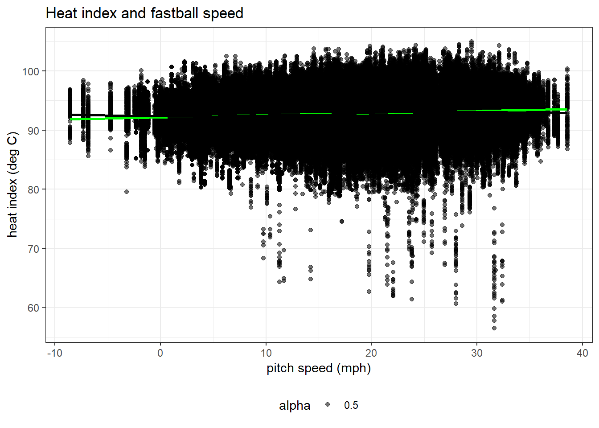
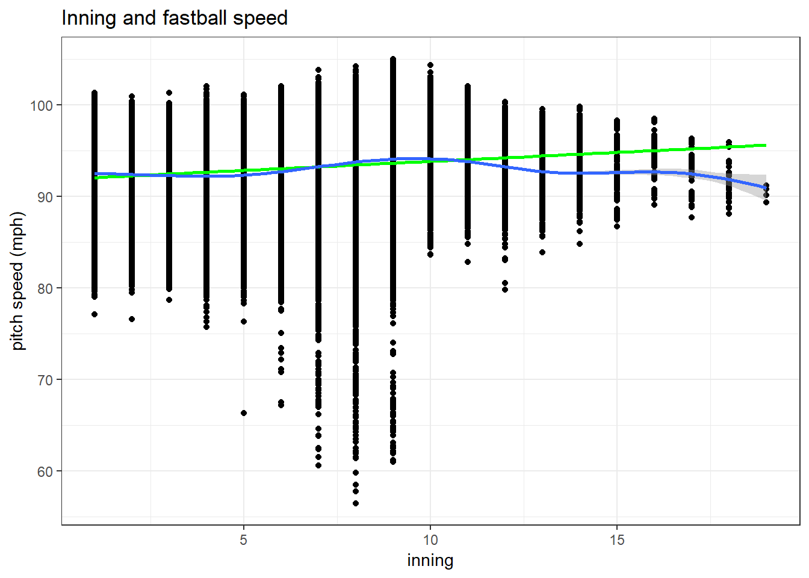
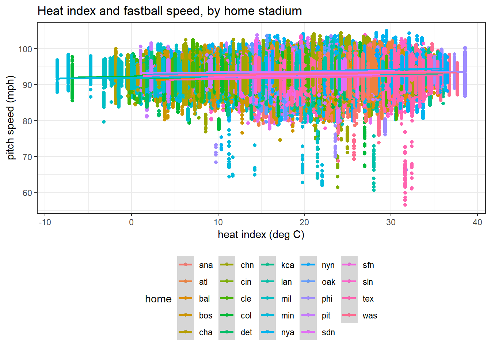

pitch_tidy_db <- read.csv("./data/pitch_tidy_db.csv") %>%
select(des, id, type, start_speed, end_speed, pitch_type, inning_side, inning, count, away, home, pitcher, event, batter_name, pitcher_name, team_name, tfs_zulu, tmax, tmin, tmean, tdmean, heat_index, rh) %>%
mutate(home = factor(home),
away = factor(away),
pitcher_name = factor(pitcher_name),
pitch_type = factor(pitch_type),
pitcher = factor(pitcher),
type = factor(type),
event = factor(event),
team_name = factor(team_name))
# missing `date` from latest data_pipelinepitch_tidy_db %>%
filter(pitch_type != "NA") %>%
group_by(pitch_type) %>%
summarise(n = n(),
mean_s_s = mean(start_speed, na.rm = TRUE),
sd_s_s = sd(start_speed, na.rm = TRUE),
mean_e_s = mean(end_speed, na.rm = TRUE),
sd_e_s = sd(end_speed, na.rm = TRUE),
mean_inning = mean(inning)) %>%
top_n(n = 10, wt = n) %>%
arrange(desc(n)) %>%
kable() %>%
kable_styling(bootstrap_options = c("striped", "hover", "condensed")) %>%
add_header_above(c(" " = 2, "Start Speed" = 2, "End Speed" = 2, " " = 1))| pitch_type | n | mean_s_s | sd_s_s | mean_e_s | sd_e_s | mean_inning |
|---|---|---|---|---|---|---|
| FF | 756133 | 92.84753 | 2.781956 | 85.21839 | 2.578296 | 5.040757 |
| SL | 338307 | 84.42657 | 3.392580 | 78.24500 | 3.310105 | 5.317286 |
| FT | 248676 | 92.19853 | 2.679753 | 84.71952 | 2.513686 | 4.485998 |
| CH | 215879 | 83.91853 | 3.495811 | 77.45500 | 3.278466 | 4.740003 |
| SI | 184263 | 91.56055 | 2.892592 | 84.17433 | 2.700352 | 5.246392 |
| CU | 180200 | 77.75082 | 3.897832 | 71.93778 | 3.759452 | 4.741082 |
| FC | 107156 | 88.41910 | 2.950208 | 81.92798 | 2.712845 | 5.160999 |
| KC | 48274 | 80.27274 | 3.184227 | 74.20072 | 3.017181 | 5.055827 |
| FS | 31083 | 84.62038 | 2.946624 | 78.27640 | 2.795827 | 5.197793 |
| KN | 7612 | 75.59147 | 2.755427 | 69.18987 | 2.577815 | 3.739884 |
Pitch type abbreviations and descriptions are listed at https://www.fangraphs.com/library/pitch-type-abbreviations-classifications/. The top 5 by frequency are:
FF = four-seam fastball
SL = slider
FT = two-seam fastball
CH = changeup
CU = curveball
I will restrict analysis to four-seam fastballs, of which over 750,000 were thrown in outdoor ballparks during our selected time period.
Most fastballs thrown
pitch_tidy_db %>%
filter(pitch_type == "FF",
pitcher_name != "NA") %>%
group_by(pitcher_name) %>%
summarise(n_ff = n(),
mean_speed = mean(start_speed, na.rm = TRUE),
sd_speed = sd(start_speed, na.rm = TRUE)) %>%
arrange(desc(n_ff)) %>%
slice(1:10) %>%
kable() %>%
kable_styling(bootstrap_options = c("striped", "hover", "condensed")) | pitcher_name | n_ff | mean_speed | sd_speed |
|---|---|---|---|
| Max Scherzer | 5793 | 94.29660 | 1.229043 |
| Justin Verlander | 5581 | 94.07371 | 1.875879 |
| Jon Lester | 5530 | 91.65311 | 1.194075 |
| Kevin Gausman | 5425 | 94.38501 | 1.828185 |
| Jonathan Gray | 4622 | 95.19422 | 1.315647 |
| Julio Teheran | 4500 | 90.69960 | 1.667050 |
| Jose Quintana | 4470 | 91.98085 | 1.095752 |
| Clayton Kershaw | 4466 | 92.39447 | 1.258154 |
| Luis Severino | 4349 | 96.83925 | 1.545939 |
| Ian Kennedy | 4320 | 91.88771 | 1.134765 |
Fastest average speed
pitch_tidy_db %>%
filter(pitch_type == "FF",
pitcher_name != "NA") %>%
group_by(pitcher_name) %>%
summarise(mean_speed = mean(start_speed, na.rm = TRUE),
sd_speed = sd(start_speed, na.rm = TRUE),
n_ff = n()) %>%
arrange(desc(mean_speed)) %>%
slice(1:10) %>%
kable() %>%
kable_styling(bootstrap_options = c("striped", "hover", "condensed")) | pitcher_name | mean_speed | sd_speed | n_ff |
|---|---|---|---|
| Mauricio Cabrera | 100.11995 | 1.1899044 | 406 |
| Aroldis Chapman | 99.81404 | 1.7582704 | 2314 |
| Diego Castillo | 99.05417 | 1.4515297 | 24 |
| Tayron Guerrero | 98.55378 | 1.6559777 | 437 |
| Ryne Stanek | 98.46194 | 0.8974139 | 289 |
| Brian Ellington | 98.19503 | 1.3016014 | 483 |
| Arquimedes Caminero | 98.17756 | 1.8615747 | 566 |
| Seranthony Dominguez | 98.04969 | 0.8998111 | 479 |
| Raymond Black | 97.90044 | 1.1472124 | 229 |
| Noah Syndergaard | 97.85635 | 1.1991196 | 2039 |
Top speed pitches in our database
pitch_tidy_db %>%
filter(pitcher_name != "NA") %>%
arrange(desc(start_speed, end_speed)) %>%
slice(1:10) %>%
select(start_speed, end_speed, pitch_type, pitcher_name, batter_name, inning, des, home, away, tmax, heat_index) %>%
kable() %>%
kable_styling(bootstrap_options = c("striped", "hover", "condensed")) | start_speed | end_speed | pitch_type | pitcher_name | batter_name | inning | des | home | away | tmax | heat_index |
|---|---|---|---|---|---|---|---|---|---|---|
| 105.0 | 96.0 | FF | Aroldis Chapman | J.J. Hardy | 9 | Ball | nya | bal | 32.429 | 29.50 |
| 104.7 | 95.9 | FF | Aroldis Chapman | Ryan Flaherty | 9 | In play, out(s) | nya | bal | 32.429 | 29.50 |
| 104.5 | 94.6 | FF | Aroldis Chapman | Brandon Belt | 9 | Foul | nya | sfn | 31.914 | 28.29 |
| 104.4 | 94.8 | SI | Aroldis Chapman | NA | 9 | Ball | nya | atl | 35.399 | 33.02 |
| 104.4 | 94.9 | FF | Aroldis Chapman | Nolan Reimold | 9 | Ball | nya | bal | 32.429 | 29.50 |
| 104.4 | 94.5 | FF | Aroldis Chapman | Brandon Belt | 9 | Ball | nya | sfn | 31.914 | 28.29 |
| 104.4 | 96.5 | FF | Aroldis Chapman | Jacob Realmuto | 9 | Foul | chn | mia | 27.377 | 24.22 |
| 104.3 | 95.9 | SI | Aroldis Chapman | Nelson Cruz | 9 | In play, out(s) | nya | sea | 31.006 | 25.62 |
| 104.3 | 95.5 | FF | Aroldis Chapman | Mac Williamson | 10 | Ball | nya | sfn | 34.908 | 32.13 |
| 104.2 | 94.7 | FF | Aroldis Chapman | Dustin Pedroia | 8 | Foul (Runner Going) | nya | bos | 27.326 | 19.84 |
We used simple linear regression to examine the effects of daily heat index and daily maximum temperature on the start speed of four-seam fastballs while also considering the effects of the individual pitcher, inning, and ballpark location (home team)(AD1).
# Filter dataframe to only four-seam fastballs
pitch_tidy_ff <-
pitch_tidy_db %>%
filter(pitch_type == "FF")pitch_tidy_ff %>%
lm(start_speed ~ heat_index, data = .) ##
## Call:
## lm(formula = start_speed ~ heat_index, data = .)
##
## Coefficients:
## (Intercept) heat_index
## 92.17442 0.03565 broom::tidy() %>%
knitr::kable(digits = 3)A one degree increase in heat index increased the start speed of four-seam fastballs by 0.036 mph (p < 0.001). This is a statistically significant difference, but it is not meaningful.
pitch_tidy_ff %>%
lm(start_speed ~ tmax, data = .) %>%
broom::tidy() %>%
knitr::kable(digits = 3)| term | estimate | std.error | statistic | p.value |
|---|---|---|---|---|
| (Intercept) | 91.965 | 0.011 | 8041.278 | 0 |
| tmax | 0.037 | 0.000 | 80.316 | 0 |
A one degree increase in maximum daily temperature increased the start speed of four-seam fastballs by 0.037 mph (p < 0.0001). This result is nearly identical to the heat index model.
pitch_tidy_ff %>%
lm(start_speed ~ heat_index, data = .) %>%
broom::tidy() %>%
knitr::kable(digits = 3)| term | estimate | std.error | statistic | p.value |
|---|---|---|---|---|
| (Intercept) | 92.174 | 0.009 | 10249.200 | 0 |
| heat_index | 0.036 | 0.000 | 79.963 | 0 |
.
A one inning increase is associated with a 0.197 mph increase in the start speed of four-seam fastballs (p < 0.001). This may be due to closers coming into the game and throwing more heat. Two-tenths of a mph most likely does not make a difference on a per at-bat basis.
pitch_tidy_ff %>%
filter(pitcher_name != "NA") %>%
group_by(pitcher_name) %>%
summarise(n_ff = n()) %>%
arrange(desc(n_ff)) %>%
slice(1:200) %>%
ungroup() %>%
left_join(., pitch_tidy_ff, by = "pitcher_name") %>%
lm(start_speed ~ inning + pitcher_name, data = .) %>%
broom::tidy() %>%
slice(1:5) %>%
knitr::kable(digits = 3) | term | estimate | std.error | statistic | p.value |
|---|---|---|---|---|
| (Intercept) | 87.545 | 0.032 | 2698.412 | 0.000 |
| inning | 0.002 | 0.001 | 2.122 | 0.034 |
| pitcher_nameAaron Nola | 4.588 | 0.044 | 103.516 | 0.000 |
| pitcher_nameAdam Conley | 3.977 | 0.045 | 87.556 | 0.000 |
| pitcher_nameAdam Morgan | 3.892 | 0.048 | 81.153 | 0.000 |
After adjusting for pitcher, the effect of inning is only an increase of 0.002 mph per inning (p = 0.03). The effect of inning will not be carried forward to further weather analysis.
pitch_tidy_ff %>%
lm(start_speed ~ heat_index + home, data = .) %>%
broom::tidy() %>%
knitr::kable(digits = 3)| term | estimate | std.error | statistic | p.value |
|---|---|---|---|---|
| (Intercept) | 91.585 | 0.019 | 4783.009 | 0.000 |
| heat_index | 0.041 | 0.000 | 88.275 | 0.000 |
| homeatl | 0.358 | 0.023 | 15.801 | 0.000 |
| homebal | 0.037 | 0.022 | 1.666 | 0.096 |
| homebos | 0.879 | 0.022 | 39.201 | 0.000 |
| homecha | 0.567 | 0.024 | 23.957 | 0.000 |
| homechn | 0.478 | 0.023 | 21.219 | 0.000 |
| homecin | 0.541 | 0.022 | 24.255 | 0.000 |
| homecle | 0.344 | 0.023 | 15.254 | 0.000 |
| homecol | 0.814 | 0.022 | 37.615 | 0.000 |
| homedet | 0.328 | 0.023 | 14.416 | 0.000 |
| homekca | 0.362 | 0.024 | 15.333 | 0.000 |
| homelan | 0.427 | 0.022 | 19.230 | 0.000 |
| homemil | 0.423 | 0.023 | 18.696 | 0.000 |
| homemin | 0.305 | 0.023 | 13.469 | 0.000 |
| homenya | 1.315 | 0.022 | 59.066 | 0.000 |
| homenyn | 0.759 | 0.023 | 32.926 | 0.000 |
| homeoak | 0.211 | 0.023 | 9.089 | 0.000 |
| homephi | 0.603 | 0.023 | 26.736 | 0.000 |
| homepit | 1.294 | 0.023 | 55.927 | 0.000 |
| homesdn | -0.033 | 0.023 | -1.428 | 0.153 |
| homesfn | 0.360 | 0.023 | 15.750 | 0.000 |
| homesln | 0.771 | 0.023 | 33.423 | 0.000 |
| hometex | -0.387 | 0.023 | -16.649 | 0.000 |
| homewas | 0.576 | 0.023 | 25.521 | 0.000 |
A one inning increase is associated with a 0.197 mph increase in the start speed of four-seam fastballs (p < 0.001). This may be due to closers coming into the game and throwing more heat. Two-tenths of a mph most likely does not make a difference on a per at-bat basis.
Additional analysis could examine non-linear effects of weather on pitch speed. Different approaches could include segmented regression or generalized additive models to test weather parameter thresholds.
pitch_tidy_ff %>%
ggplot(., aes(x = heat_index, y = start_speed)) +
geom_point(aes(alpha = 0.5)) +
geom_smooth(method = "lm", color = "green") +
geom_smooth(color = "black") +
labs(
title = "Heat index and fastball speed",
x = "pitch speed (mph)",
y = "heat index (deg C)"
) ## `geom_smooth()` using method = 'gam' and formula 'y ~ s(x, bs = "cs")'
pitch_tidy_ff %>%
ggplot(., aes(x = inning, y = start_speed)) +
geom_point() +
geom_smooth(method = "lm", color = "green") +
geom_smooth() +
labs(
title = "Inning and fastball speed",
x = "inning",
y = "pitch speed (mph)"
) ## `geom_smooth()` using method = 'gam' and formula 'y ~ s(x, bs = "cs")'
pitch_tidy_ff %>%
ggplot(., aes(x = heat_index, y = start_speed, color = home)) +
geom_point() +
geom_smooth(method = "lm") +
labs(
title = "Heat index and fastball speed, by home stadium",
x = "heat index (deg C)",
y = "pitch speed (mph)"
) 